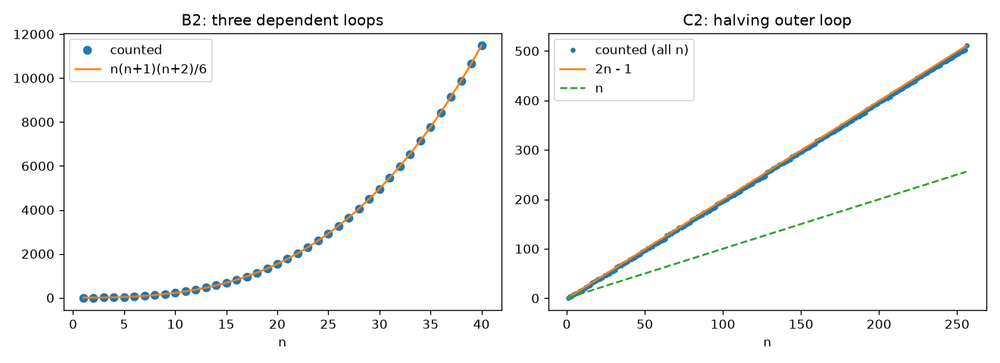

Module 1 · Quiz and problems
Check yourself on the analysis of nonrecursive algorithms. Theory: Module 1.
Try each problem on paper first. If you are stuck, open the hint. Compare your result with the answer, and open the full solution only after you have tried.
Quiz: 10 questions
Level A problems (basic)
A1. Counting negative numbers Level A
ALGORITHM CountNegatives(A[0..n − 1])
count ← 0
for i ← 0 to n − 1 do
if A[i] < 0
count ← count + 1
return count
Apply the five-step plan: give the input size, the basic operation, say whether there are different cases, write the sum and find \(C(n)\) and its order of growth.
Hint
Which line is executed on every iteration, regardless of the values in the array: the comparison or the increment?
Answer
\(C(n) = n \in \Theta(n)\), one case.
Full solution
1. Input size: the number of elements \(n\).
2. Basic operation: the comparison \(A[i] < 0\). The increment is a bad choice: it runs from 0 to \(n\) times depending on the data.
3. The loop has no early exit, so the number of comparisons is the same for all arrays of size \(n\). One case.
4. \(C(n) = \sum_{i=0}^{n-1} 1\).
5. By \(u - l + 1\): \(C(n) = (n-1) - 0 + 1 = n \in \Theta(n)\).
A2. A sum with a linear term Level A
Find a closed-form formula and the order of growth of \(\displaystyle S(n) = \sum_{i=1}^{n} (3i + 2)\). Check your formula for \(n = 2\).
Hint
Split the sum into two sums (rule R2), take the constant out (rule R1), then use \(\sum i = n(n+1)/2\) and \(\sum 1 = n\).
Answer
\(S(n) = \dfrac{3n^2 + 7n}{2} \in \Theta(n^2)\). For \(n = 2\): \(S(2) = 13\).
Full solution
The leading term is \(\tfrac32 n^2\), so \(S(n) \in \Theta(n^2)\).
Check: directly \(S(2) = (3+2) + (6+2) = 13\); by the formula \((12 + 14)/2 = 13\). ✔
A3. Counting iterations with unusual bounds Level A
x ← 0
for i ← 5 to 2n − 1 do
x ← x + i
For \(n \ge 3\), how many times is the addition \(x + i\) executed? What is the order of growth?
Hint
The number of integers from \(l\) to \(u\) is \(u - l + 1\). Check your answer with \(n = 3\).
Answer
\(C(n) = 2n - 5 \in \Theta(n)\).
Full solution
The basic operation is the addition; it is executed once per value of \(i\).
\[ C(n) = \sum_{i=5}^{2n-1} 1 = (2n - 1) - 5 + 1 = 2n - 5. \]Check for \(n = 3\): \(i\) goes from 5 to 5, one iteration, and \(2\cdot3 - 5 = 1\). ✔ The order of growth is \(\Theta(n)\).
A4. Sum of all entries of a rectangular matrix Level A
ALGORITHM MatrixTotal(A[0..n − 1, 0..m − 1])
s ← 0
for i ← 0 to n − 1 do
for j ← 0 to m − 1 do
s ← s + A[i, j]
return s
Count the additions as a function of \(n\) and \(m\). What do you get for a square matrix (\(m = n\))? How many additions for a \(7 \times 4\) matrix?
Hint
The bounds of the inner loop do not depend on \(i\). Each loop gives one sum.
Answer
\(C(n, m) = nm\); for a square matrix \(n^2\); for \(7 \times 4\): 28 additions.
Full solution
Input size: two parameters \(n\) and \(m\) (number of rows and columns). Basic operation: the addition. One case.
\[ C(n, m) = \sum_{i=0}^{n-1} \sum_{j=0}^{m-1} 1 = \sum_{i=0}^{n-1} m = nm. \]For \(m = n\): \(C = n^2 \in \Theta(n^2)\). Note: in terms of the number of entries \(N = nm\) the algorithm is linear, \(\Theta(N)\) — the order "depends on how you measure the size". For \(7 \times 4\): \(7 \cdot 4 = 28\).
Level B problems (intermediate)
B1. Inner loop starting at \(i\) Level B
x ← 0
for i ← 1 to n do
for j ← i to n do
x ← x + 1
Find the exact number of executions of \(x \leftarrow x + 1\) and the order of growth.
Hint
The inner loop runs \(n - i + 1\) times. Write out the terms for \(i = 1, 2, \dots, n\) — what familiar sum do you get?
Answer
\(C(n) = \dfrac{n(n+1)}{2} \in \Theta(n^2)\).
Full solution
For \(i = 1\) the term is \(n\), for \(i = 2\) it is \(n - 1\), …, for \(i = n\) it is \(1\). So \[ C(n) = n + (n-1) + \dots + 1 = \sum_{k=1}^{n} k = \frac{n(n+1)}{2} \in \Theta(n^2). \]
Check \(n = 3\): \(3 + 2 + 1 = 6 = 3\cdot4/2\). ✔
B2. Three nested loops with dependent bounds Level B
count ← 0
for i ← 0 to n − 1 do
for j ← 0 to i do
for k ← 0 to j do
count ← count + 1
return count
Find the exact value returned by the algorithm (the number of executions of the innermost line) and its order of growth.
Hint
Simplify from the inside out. The innermost sum is \(j + 1\). Then \(\sum_{j=0}^{i}(j+1) = \frac{(i+1)(i+2)}{2}\). For the last step, write \(m(m+1) = m^2 + m\) and use the formulas for \(\sum m^2\) and \(\sum m\).
Answer
\(C(n) = \dfrac{n(n+1)(n+2)}{6} \in \Theta(n^3)\).
Full solution
Substitute \(m = i + 1\) (\(m\) from 1 to \(n\)):
\[ C(n) = \frac12 \sum_{m=1}^{n} m(m+1) = \frac12\Big(\sum_{m=1}^{n} m^2 + \sum_{m=1}^{n} m\Big) = \frac12\Big(\frac{n(n+1)(2n+1)}{6} + \frac{n(n+1)}{2}\Big). \] \[ = \frac{n(n+1)}{2}\cdot\frac{(2n+1) + 3}{6} = \frac{n(n+1)}{2}\cdot\frac{2n+4}{6} = \frac{n(n+1)(n+2)}{6}. \]The leading term is \(n^3/6\), so \(C(n) \in \Theta(n^3)\). Check \(n = 2\): \(i = 0\) gives 1, \(i = 1\) gives \(1 + 2 = 3\); total 4, and \(2\cdot3\cdot4/6 = 4\). ✔
B3. Is the array sorted? Case analysis Level B
ALGORITHM IsSorted(A[0..n − 1])
//Returns true if A is in nondecreasing order
for i ← 0 to n − 2 do
if A[i] > A[i + 1] return false
return true
For \(n \ge 2\), find \(C_{worst}(n)\) and \(C_{best}(n)\) for the comparison \(A[i] > A[i+1]\). Give an example input for each case. What can you say about the algorithm using \(O\)?
Hint
Find the input that makes the loop stop as early as possible, and the input that makes it run to the end.
Answer
\(C_{worst}(n) = n - 1 \in \Theta(n)\) (for example a sorted array); \(C_{best}(n) = 1 \in \Theta(1)\) (for example \(A[0] > A[1]\)). The algorithm is in \(O(n)\).
Full solution
Input size \(n\), basic operation the comparison. Because of return false the count depends on the input, so we consider cases.
Worst case: the loop runs for all \(i\) from 0 to \(n-2\). This happens when the array is sorted (e.g. \(1, 2, 3, 4\)) or when the only "descent" is the last pair (e.g. \(1, 2, 4, 3\)). \[ C_{worst}(n) = \sum_{i=0}^{n-2} 1 = n - 1. \]
Best case: \(A[0] > A[1]\), e.g. \(2, 1, 3, 4\). The first comparison returns false: \(C_{best}(n) = 1\).
Since every input needs between 1 and \(n - 1\) comparisons, the algorithm is in \(O(n)\) (but not in \(\Theta(n)\) for all inputs).
B4. Inner bound \(i^2\) Level B
for i ← 1 to n do
for j ← 1 to i ∗ i do
op
Find the exact number of executions of op and its order of growth. Is it \(\Theta(n^2)\)?
Hint
The inner loop runs \(i^2\) times, not \(i\) times. Which standard formula do you need?
Answer
\(C(n) = \dfrac{n(n+1)(2n+1)}{6} \in \Theta(n^3)\) — not \(\Theta(n^2)\).
Full solution
Two nested loops do not automatically mean \(\Theta(n^2)\): you must look at the bounds. Here the inner bound grows like \(n^2\), so in total we get \(n^3\). Check \(n = 2\): \(1 + 4 = 5\) and \(2\cdot3\cdot5/6 = 5\). ✔
Level C problems (advanced)
C1. Average case of a search with a "popular" first element Level C
Sequential search (see Module 1, Section 5) is used on an array of \(n \ge 2\) elements, where the first element is a frequently requested item. Assume:
- the search is successful with probability \(p\);
- if it is successful, the key is at position 1 with probability \(\tfrac12\); otherwise it is equally likely to be at any of the positions \(2, \dots, n\).
Find \(C_{avg}(n)\) for the key comparisons. Compare with the uniform case for \(p = 1\).
Hint
Each of positions \(2, \dots, n\) has probability \(\frac{1}{2(n-1)}\) inside the successful search. A key at position \(i\) costs \(i\) comparisons. Use \(\sum_{i=2}^{n} i = \frac{n(n+1)}{2} - 1 = \frac{(n-1)(n+2)}{2}\).
Answer
\(C_{avg}(n) = \dfrac{p(n+4)}{4} + n(1-p)\). For \(p = 1\): \(\frac{n+4}{4} \approx \frac n4\), about half of the uniform \(\frac{n+1}{2}\). Still \(\Theta(n)\).
Full solution
Successful search. Expected number of comparisons, given that the key is present:
\[ E_{succ} = \frac12\cdot 1 + \sum_{i=2}^{n} \frac{1}{2(n-1)}\cdot i = \frac12 + \frac{1}{2(n-1)}\cdot\frac{(n-1)(n+2)}{2} = \frac12 + \frac{n+2}{4} = \frac{n+4}{4}. \]Unsuccessful search (probability \(1 - p\)): \(n\) comparisons.
Average: \[ C_{avg}(n) = p\cdot\frac{n+4}{4} + (1-p)\cdot n. \]
Check \(n = 2\), \(p = 1\): position 1 (1 comparison) or position 2 (2 comparisons), each with probability \(\tfrac12\): average \(1.5\); formula \(6/4 = 1.5\). ✔
For \(p = 1\) the cost is \(\approx n/4\) instead of \(\approx n/2\): putting popular items first halves the average work, but the order of growth stays \(\Theta(n)\).
C2. A halving outer loop with a growing inner loop Level C
i ← n
while i ≥ 1 do
for j ← 1 to i do
op
i ← ⌊i/2⌋
Let \(n = 2^k\). (a) How many times does the outer loop run? (b) Find the exact number of executions of op. (c) A student says: "The outer loop runs \(\log n\) times and the inner loop up to \(n\) times, so the algorithm is \(\Theta(n \log n)\)". Is this correct?
Hint
Write down the values of \(i\): \(2^k, 2^{k-1}, \dots, 2, 1\). The inner loop runs \(i\) times for each of them. You get a geometric series.
Answer
(a) \(k + 1 = \log_2 n + 1\) times. (b) \(C(n) = 2n - 1 \in \Theta(n)\). (c) No: \(n \log n\) is only an upper bound, the true order is \(\Theta(n)\).
Full solution
(a) \(i\) takes the values \(2^k, 2^{k-1}, \dots, 2^0 = 1\); after that \(i = 0\) and the loop stops. That is \(k + 1 = \log_2 n + 1\) iterations.
(b) For \(i = 2^t\) the inner loop runs \(2^t\) times:
\[ C(n) = \sum_{t=0}^{k} 2^t = 2^{k+1} - 1 = 2\cdot 2^k - 1 = 2n - 1. \](c) The student multiplied the number of outer iterations by the largest inner count. This gives a correct upper bound \(O(n \log n)\), but not a tight one, because the inner loop gets smaller each time: \(n + n/2 + n/4 + \dots < 2n\). The correct answer is \(\Theta(n)\).
For any \(n\) (not only powers of 2) the same argument gives \(C(n) \le n + n/2 + n/4 + \dots < 2n\) and \(C(n) \ge n\), so \(C(n) \in \Theta(n)\).
"Find the mistake" problems
F1. Is trial division fast? Find the mistake
ALGORITHM IsPrime(n)
//Input: An integer n ≥ 2
for d ← 2 to ⌊√n⌋ do
if n mod d = 0 return false
return true
A student's solution:
"Input size: \(n\). Basic operation: \(n \bmod d\). Worst case: \(n\) is prime, the loop runs completely, \(C_{worst}(n) = \lfloor\sqrt n\rfloor - 1 \in \Theta(\sqrt n)\). Since \(\sqrt n\) grows slower than \(n\), the algorithm is sublinear. It is efficient even for numbers with 1000 decimal digits."
Find the mistake and correct the conclusion.
Hint
How many symbols do you need to write down the input? What is the size of a number with 1000 decimal digits?
Answer
The mistake is size vs. value: the input size is the number of bits \(b = \lfloor\log_2 n\rfloor + 1\), not \(n\). Then \(\sqrt n \approx 2^{b/2}\), so the algorithm is exponential in the input size.
Full solution
The count \(\lfloor\sqrt n\rfloor - 1\) is correct as a function of the value \(n\). The mistake is in step 1 of the plan: the input is a single number, and its size is the length of its representation, \(b = \lfloor \log_2 n \rfloor + 1\) bits. Then \(n \approx 2^b\) and
\[ C_{worst} \approx \sqrt{n} \approx \sqrt{2^b} = 2^{b/2} \in \Theta\big((\sqrt2)^b\big), \]which is exponential in \(b\). For a 1000-digit number, \(\sqrt n \approx 10^{500}\) divisions — impossible on any computer.
Correct conclusion: the algorithm is practical only for small numbers; it is not efficient in terms of input size.
F2. Counting equal pairs Find the mistake
ALGORITHM CountEqualPairs(A[0..n − 1])
count ← 0
for i ← 0 to n − 2 do
for j ← i + 1 to n − 1 do
if A[i] = A[j] count ← count + 1
return count
A student's solution:
"Basic operation: the comparison \(A[i] = A[j]\). No early exit, one case. For a fixed \(i\) the inner loop runs \(n - i\) times, so \[ C(n) = \sum_{i=0}^{n-2} (n - i) = n(n-1) - \frac{(n-2)(n-1)}{2} = \frac{(n-1)(n+2)}{2} \in \Theta(n^2)." \]
Find the mistake and give the correct formula.
Hint
Test the student's formula for \(n = 2\). How many comparisons does the algorithm actually make?
Answer
Off-by-one error: \(j\) goes from \(i+1\) to \(n-1\), which is \(n - 1 - i\) values, not \(n - i\). Correct: \(C(n) = \dfrac{n(n-1)}{2}\). The order \(\Theta(n^2)\) happens to be right, but the exact formula is wrong.
Full solution
Check: for \(n = 2\) the algorithm makes one comparison (\(A[0] = A[1]\)), but the student's formula gives \(1\cdot4/2 = 2\). So the formula is wrong.
The number of values of \(j\) from \(i + 1\) to \(n - 1\) is \((n-1) - (i+1) + 1 = n - 1 - i\). Then
\[ C(n) = \sum_{i=0}^{n-2} (n - 1 - i) = (n-1) + (n-2) + \dots + 1 = \frac{(n-1)n}{2}. \]Check \(n = 2\): \(1\cdot2/2 = 1\). ✔ (The student's algebra after the first step was correct; the error was only in the number of terms.)
Empirical verification task
E1. Check two formulas with an operation counter Empirical
Write a Python program that:
- implements the loops of problem B2 and problem C2 with a counter next to the basic operation;
- runs B2 for \(n = 5, 10, 20, 40, 80\) and C2 for \(n = 2^4, 2^6, \dots, 2^{14}\);
- prints a table: \(n\), counted value, value of the formula, and the ratio counted / \(g(n)\), where \(g(n) = n^3\) for B2 and \(g(n) = n\) for C2;
- states a conclusion: are the formulas correct? Which constant does the ratio approach?
Hint
Pseudocode for j ← 0 to i becomes for j in range(i + 1) in Python (the upper bound of range is not included). ⌊i/2⌋ is i // 2.
Answer
Counted values equal \(n(n+1)(n+2)/6\) and \(2n - 1\) exactly. The ratios approach \(1/6 \approx 0.167\) and \(2\).
Full solution (code)
def b2(n):
count = 0
for i in range(n): # i = 0 .. n-1
for j in range(i + 1): # j = 0 .. i
for k in range(j + 1): # k = 0 .. j
count += 1
return count
def c2(n):
count = 0
i = n
while i >= 1:
for j in range(i): # j = 1 .. i
count += 1
i //= 2
return count
print(f"{'n':>6} {'counted':>10} {'formula':>10} {'ratio':>8}")
for n in [5, 10, 20, 40, 80]:
c, f = b2(n), n * (n + 1) * (n + 2) // 6
print(f"{n:>6} {c:>10} {f:>10} {c / n**3:>8.4f}")
for k in range(4, 15, 2):
n = 2 ** k
c, f = c2(n), 2 * n - 1
print(f"{n:>6} {c:>10} {f:>10} {c / n:>8.4f}")Output (B2): 35, 220, 1540, 11480, 88560 — equal to the formula. Ratios 0.28, 0.22, 0.19, 0.179, 0.173 → \(1/6\).
Output (C2): 31, 127, 511, … , 32767 — equal to \(2n-1\). Ratios → 2.

Conclusion: both formulas are confirmed. The leading constant of B2 is \(\tfrac16\) (from \(n^3/6\)), so B2 is \(\Theta(n^3)\); C2 is \(\Theta(n)\) with constant 2. The full program with a plot is code/empirical_module1.py.